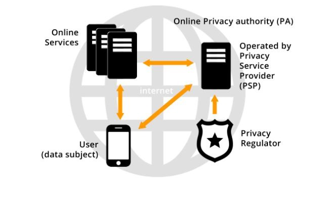
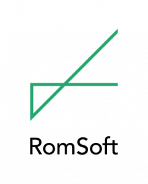

Data publicării: 14.08.2018
RomSoft (www.romsoft.ro) este o companie privată de dezvoltare software cu experiență vastă în proiectarea și implementarea sistemelor informatice scalabile pentru clienții săi din Europa de Vest, SUA și Japonia, precum și în activitățile de cercetare și dezvoltare prin participări în consorții de parteneriate multiple finanțate prin programe europene și naționale de cercetare și dezvoltare. RomSoft a obținut în anul 2008 ”Certificatul pentru cercetare științifică și dezvoltare” emis de Autoritatea Națională pentru Cercetare Științifică și certificat ISO 9001 de către TÜV AUSTRIA CERT GMBH.
RomSoft a fost responsabilă pentru toate etapele de proiectare și dezvoltare software în mai multe platforme integrate cu aplicații în domeniul tele-medicinei și e-sănătății care includ totul, de la achiziționarea de date (de la echipamentele electronice sau senzorii inteligenți) la integrarea datelor, prelucrarea și transmiterea sigură a datelor medicale.
În cadrul oricărui proiect de colaborare, RomSoft are o vastă experiență care include cercetarea și analiza, arhitectura și implementarea software-ului, designul infrastructurii, designul interfeței grafice, testările multiple și asigurarea calității, implementarea produsului și suportul tehnic.
Proiectul OPERANDO este unul de cercetare și dezvoltare finanțat în cadrul programului Orizont 2020 al Uniunii Europene. Consorțiul de proiect include pe lângă RomSoft alți 8 parteneri din diferite țări.
Pentru RomSoft acest proiect este o confirmare a rezultatelor pozitive din proiectele anterioare ale FP7 și marchează angajamentul nostru de a continua strategia noastră de a căuta și a crea oportunități pentru dezvoltarea de noi produse și servicii. Orizont 2020 este cel mai mare program de cercetare și inovare al UE. Acesta este prevăzut să reprezinte instrumentul financiar de punere în aplicare a Uniunii inovării, o inițiativă emblematică a Strategiei Europene 2020 care vizează asigurarea competitivității globale a Europei.
Scopul proiectului
Proiectul OPERANDO propune o soluție inovativă de securitate online a datelor personale, care va permite implementarea conceptului de Securitate a Datelor ca Serviciu (Privacy as a Service). Proiectul constă în implementarea unei platforme inovatoare de protecție a datelor personale care va putea fi folosită de toate părțile direct implicate în securitatea online a datelor, de la utilizatorii finali și furnizori de servicii de securitate a datelor până la organisme de reglementare în domeniu. Proiectul OPERANDO este susținut de Comisia Europeană în cadrul programului Orizont 2020 (H2020).
Pentru informații suplimentare despre proiect puteți accesa:
www.opernado.eu | www.plusprivacy.com | www.romsoft.ro
Twitter: @OperandoH2020 | Facebook: OperandoH2020 | LinkedIn: operandoh2020

Obiective
Proiectul OPERANDO (Online Privacy Enforcement, Assurance and Optimization) își propune să implementeze o platformă inovatoare de protecție a datelor personale care va putea fi folosită de toate părțile direct implicate în securitatea online a datelor.
Platforma OPERANDO suportă modele de business flexibile și viabile, țintind inclusiv segmente de piață individuale cum ar fi administrația publică, rețelele de socializare și IoT (Internet of Things).
Un aspect cheie abordat de OPERANDO îl constituie nevoia de a simplifica managementul securității datelor pentru utilizatorii finali. OPERANDO se va adresa de asemenea furnizorilor de servicii online pentru a le oferi proceduri de verificare și auditare simplificate privind securitatea datelor, garantând totodată îndeplinirea așteptărilor utilizatorilor și respectarea cerințelor organismelor de reglementare. Noua tehnologie va fi testată inițial în sectorul de sănătate și în cel de administrație publică.
OPERANDO va fi disponibil ca proiect open source și va funcționa ca o platformă deschisă, evolutivă, conformă cu standardele și legislația în vigoare, care va fi integrată în mod continuu în conceptul cadru al Uniunii Europene de Confidențialitate prin Proiectare (Privacy-by-Design) – și va putea fi adaptată evoluțiilor ulterioare ale legislației, nevoilor și cerințelor mereu în schimbare privind siguranța datelor utilizatorilor și a tendințelor emergente ce le afectează.
Produsele proiectului OPERANDO:
Platforma va funcționa ca un Privacy Service Provider (PSP) independent. PSP oferă cetățenilor servicii gratuite de confidențialitate și plătește servicii furnizorilor de servicii online (OSP), sprijinind o relație sigură de confidențialitate între furnizorii de servicii, utilizatori și organismele de reglementare.
PlusPrivacy este un serviciu de tip open-source din cadrul proiectului OPERANDO, care oferă un centru de control unitar al privacy settings-urilor de pe rețelele sociale. În esență, utilizatorii pot controla din acel dashboard setările de confidențialitate pentru Facebook, Twitter, LinkedIn și pentru alte rețele, oferind doar informațiile personale pe care aceștia și le doresc să le împărtășească cu restul lumii.
În plus, prin intermediul PlusPrivacy utilizatorii au și un dashboard prin care pot vedea datele colectate de aplicații și de extensiile din browserele pe care le-au instalat.
► Maximizarea confidențialității în rețelele sociale
Utilizând “PlusPrivacy” cu un sigur click puteți seta automat toate preferințele dvs. de confidențialitate la cele mai ”prietenoase” valori de confidențialitate. Nu este nevoie să accesați paginile cu setări de confidențialitate ale fiecărui cont de rețea socială (de exemplu, Google, Facebook, Twitter, LinkedIn). Dashboard-ul PlusPrivacy este tot ceea ce aveți nevoie.
► Extensii de browser și aplicații conectate
Una dintre cele mai bune caracteristici ale dashboard-ului PlusPrivacy este descoperirea automată a aplicațiilor conectate la conturile dvs. Facebook, Twitter, Google, LinkedIn și Dropbox, precum și extensii instalate în browserul Chrome și o întrerupere a accesului (sau dezinstalare) aplicațiilor pe care nu le mai utilizați. În cele mai multe cazuri, PlusPrivacy vă va spune și care sunt permisiunile exacte acordate unei aplicații conectate. Toate acestea vă vor fi prezentate într-un tabel cu un buton de dezactivare / dezinstalare de lângă fiecare aplicație, oferindu-vă posibilitatea de a efectua o acțiune cu un singur click. Chiar dacă aveți zeci de aplicații nedorite conectate la conturile dvs. de rețea socială, veți termina setările în doar 2 minute.
► Identitățile mele
Dacă doriți să vă securizați identitatea e-mailul dvs. puteți utiliza ”Email Identity Management”. Înregistrați-vă / conectați-vă cu adresa dvs. de e-mail, care va fi apoi utilizată de serverele PlusPrivacy, cu scopul exclusiv de a trimite din nou e-mail-ul pentru a vă ascunde identitatea. Veți putea trimite e-mailuri anonime și expeditorul nu vă va cunoaște adresa reală de e-mail.
PlusPrivacy oferă protecție împotriva furtului de identitate, permițându-vă să creați până la 20 de identități false de e-mail, ceea ce vă va permite să vă ascundeți identitatea pe anumite site-uri. De acum puteți face surfing anonim pe internet fără să vă faceți griji cu privire la confidențialitatea datelor dvs.
► Blocarea și anularea urmăririi anunțurilor
Blocajul de anunțuri PlusPrivacy se bazează pe codul sursă deschis și blochează cookie-urile, blochează anunțurile video, bannerele, ferestrele pop-ups și alte forme de publicitate intruzivă și enervantă, precum și blocarea urmăririi online și a malware-ului.
Ceea ce distinge blocarea anunțurilor PlusPrivacy de celelalte ad-blockere de anunțuri este că nu există “Anunțuri acceptabile”, toate anunțurile și trackerele fiind blocate în mod implicit.
Căutăm întotdeauna feedback și modalități de îmbunătățire a platformei. Încercați PlusPrivacy în Chrome web Store, Google Play și App Store.
Public țintă
Platforma OPERANDO se adresează:
- Utilizatorilor -platforma oferă posibilitatea de a gestiona toate problemele de confidențialitate online într-un dashboard web intuitiv. Utilizatorul poate seta politica de confidențialitate în funcție de preferințele sale, iar aceste setări vor fi impuse în mod transparent pentru fiecare dintre dispozitivele utilizatorului. Serviciul va fi gratuit și ușor de utilizat.
- Furnizorilor de servicii -utilizarea serviciilor de confidențialitate va oferi acestora posibilitatea de a beneficia de:
- respectarea costurilor în conformitate cu reglementările privind confidențialitatea;
- au acces la o bază de utilizatori lucrativă și la rapoarte de analiză de date;
- evită expunerea necorespunzătoare a informațiilor nesolicitate.
- Organismelor de reglementare –Operando va oferi acces la garanțiile de confidențialitate citite de către furnizorii de servicii, precum și abilitatea de a introduce reglementări privind confidențialitatea.
Parteneri
Proiectul OPERANDO este un proiect colaborativ care implică 9 parteneri din diferite țări:

este o companie privată românească de dezvoltare de software cu experiență vastă în proiectarea și implementarea sistemelor informatice precum și în activități de cercetare și dezvoltare prin participări în consorții de parteneriate finanțate prin programe europene și naționale de cercetare și dezvoltare.
este un IMM din Marea Britanie fiind specializat în furnizarea de servicii software unei game largi de clienți, concentrându-se recent pe furnizarea de servicii web.
este un IMM din Israel ce acționează ca inițiator, dezvoltator de afaceri și manager de proiect pentru proiectele UE, inclusiv generarea de concepte și soluții noi, construirea de echipe internaționale de proiect.
este un centru de cercetare privat din Spania, independent, non-profit, de excelență internațională din Spania.
Centrul de Cercetare al Universității Pireaus din Grecia și are o experiență vastă în cercetarea aplicată și în consultanță datorită experienței personalului didactic al Universității Piraeus atât în sectorul public cât și în cel privat.
este un start-up din Germania care urmărește să promoveze educația și cercetarea prin punerea în aplicare a unor cursuri științifice și proiecte de cercetare.
Centru de inovare IT este lider internațional în domeniul cercetării aplicate în sisteme securizate de servicii.
este un IMM cu sediul în Italia. Compania oferă soluții software și tehnologii inovatoare, precum și servicii de implementare și managementul acestora.
este o entitate non-profit din Italia a cărei misiune este consolidarea cercetării de baza, translaționale și clinice în domeniile științelor biomedicale și managementului sănătății.
Prin urmare, consorțiul OPERANDO își propune să contribuie la întregul ecosistem al părților interesate online: utilizatorii, PSP-urile, furnizorii de servicii online și autorităților de reglementare. Federația autorităților de protecție a vieții private va fi sprijinită pentru a spori valoarea serviciilor și a consumului acestora. Platforma OPERANDO va fi poziționată spre aprobare de către guvernele europene și organismele de standardizare. Pentru a spori transparența serviciilor de confidențialitate și a diseminării rezultatelor, rezultatele OPERANDO vor fi implementate în Open Source și vor fi puse la dispoziția comunității pentru evoluție și adăugare de valoare dincolo de scopul proiectului.
Bibliografie
- Sînică Alboaie, Lenuta Alboaie, Mircea-Florin Vaida, and Cristina Olariu. Executable choreographies applied in OPERANDO, (extended paper). In Computer Science Journal of Moldova, 2016. Vol. 24, Issue 3, p417-436., 20p, 2016.
- C. Patsakis, A. Charemis, A. Papageorgiou, D. Mermigas, S. Pirounias, “THE MARKET’S RESPONSE TOWARDS PRIVACY AND MASS SURVEILLANCE: THE SNOWDEN AFTERMATH”, COMPUTERS AND SECURITY
- Kotzanikolaou, P., Chatzisofroniou, G., & Burmester, M. V, “BROADCAST ANONYMOUS ROUTING (BAR): SCALABLE REAL-TIME ANONYMOUS COMMUNICATION”, INTERNATIONAL JOURNAL OF INFORMATION SECURITY
- V. Tsiakos and C. Patsakis, “ANALYSIS OF PRIVACY AND SECURITY EXPOSURE IN MOBILE DATING APPLICATIONS”, INTERNATIONAL CONFERENCE ON MOBILE, SECURE AND PROGRAMMABLE NETWORKING (MSPN’2016), PARIS, FRANCE, JUNE 1-3, 2016. (ACCEPTED FOR PUBLICATION)
- Panayiotis Kotzanikolaou, Constantinos Patsakis, Emmanouil Magkos, Michalis Korakakis: LIGHTWEIGHT PRIVATE PROXIMITY TESTING FOR GEOSPATIAL SOCIAL NETWORKS. COMPUTER COMMUNICATIONS 73: 263-270 (2016)